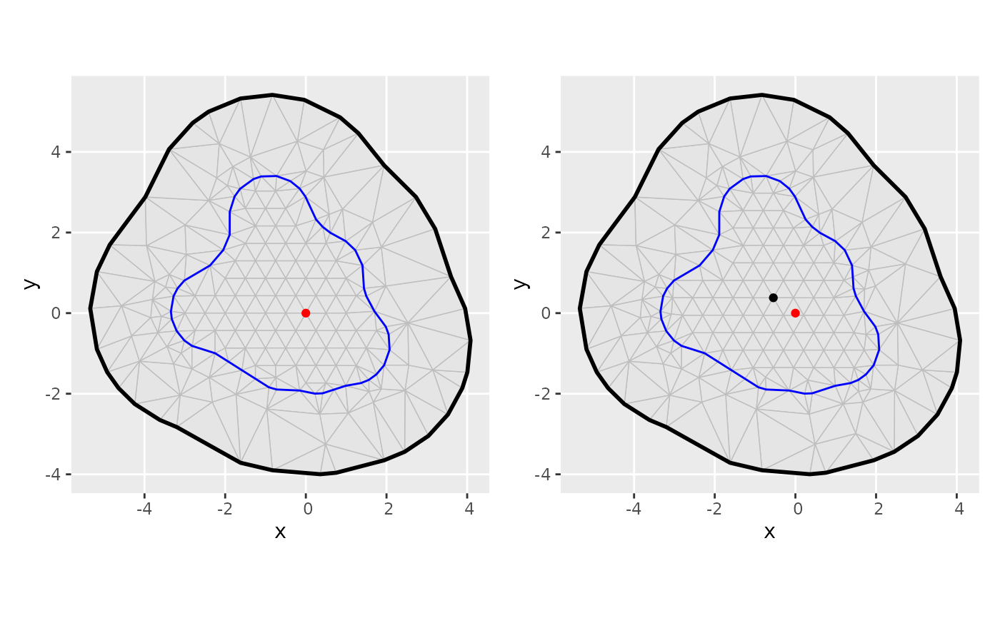

![[Experimental]](figures/lifecycle-experimental.svg) from
from 0.3.0.9001. Create
hexagon lattice points within a boundary. By default, the hexagonal lattice
is anchored at the coordinate system origin, so that grids with different
but overlapping boundaries will have matching points.
Arguments
- bnd
Boundary object (
sfpolygon or boundaryfm_segmobject)- edge_len
Triangle edge length. Default
diff(fm_bbox(bnd)[[1]]) / 250.- buffer_n
Number of triangle height multiples for buffer inside the boundary object to the start of the lattice. Default 0.49.
- align
Alignment of the hexagon lattice, either a length-2 numeric, or character, a
sf/sfc/sfgobject containing a single point), orcharacter, default"origin":- "origin"
align the lattice with the coordinate system origin
- "bbox"
align the lattice with the midpoint of the bounding box of
bnd- "centroid"
align the lattice with the centroid of the boundary,
sf::st_centroid(bnd)
- meta
logical; if
TRUE, return a list with diagnostic information from the lattice construction (including the points themselves inlattice)
Value
An sfc object with points, if meta is FALSE (default), or if
meta=TRUE, a list:
- lattice
sfcwith lattice points- edge_len
numericwith edge length- bnd_inner
sfobject with the inner boundary used to filter points outside of aedge_len * buffer_ndistance from the boundary- grid_n
integerwith the number of points in each direction prior to filtering- align
numericwith the alignment coordinates of the hexagon lattice
Author
Man Ho Suen M.H.Suen@sms.ed.ac.uk, Finn Lindgren Finn.Lindgren@gmail.com
Examples
(m <- fm_mesh_2d(
fm_hexagon_lattice(
fmexample$boundary_sf[[1]],
edge_len = 0.1 * 5
),
max.edge = c(0.2, 1) * 5,
boundary = fmexample$boundary_sf
))
#> fm_mesh_2d object:
#> Manifold: R2
#> V / E / T: 199 / 560 / 362
#> Euler char.: 1
#> Constraints: Boundary: 34 boundary edges (1 group: 1), Interior: 47 interior edges (1 group: 1)
#> Bounding box: (-5.345477, 4.083580) x (-3.997839, 5.415519)
#> Basis d.o.f.: 199
(m2 <- fm_mesh_2d(
fm_hexagon_lattice(
fmexample$boundary_sf[[1]],
edge_len = 0.1 * 5,
align = "centroid"
),
max.edge = c(0.2, 1) * 5,
boundary = fmexample$boundary_sf
))
#> fm_mesh_2d object:
#> Manifold: R2
#> V / E / T: 205 / 578 / 374
#> Euler char.: 1
#> Constraints: Boundary: 34 boundary edges (1 group: 1), Interior: 47 interior edges (1 group: 1)
#> Bounding box: (-5.345477, 4.083580) x (-3.997839, 5.415519)
#> Basis d.o.f.: 205
if (require("ggplot2", quietly = TRUE) &&
require("patchwork", quietly = TRUE)) {
((ggplot() +
geom_fm(data = m) +
geom_point(aes(0, 0), col = "red")) |
(ggplot() +
geom_fm(data = m2) +
geom_point(aes(0, 0), col = "red") +
geom_sf(data = sf::st_centroid(fmexample$boundary_sf[[1]]))
)
)
}
